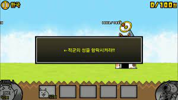

안녕하세요? 저는 게임을 좋아하는 홍승민입니다.
오늘은 제가 냥코대전쟁 쉽게 깰 수 있는방번에 대해 알려드리도록 하겠습니다.
냥코대전쟁을 처음 시작하시는 분들은 냥코대전쟁을 깔고 실행시키시면 이런화면이뜹니다
이럴때는 하라는 데로 하다가 돈을 업글시키고 라인 밀릴때는 발사 OK버튼을 눌르시면 됩니다
파워업화면에서 골고루 업글하시고 냥코뽑기, 레어 뽑기, 이벤트 뽑기를하시고 뭐가뜨시면 갈지 마시기 바랍니다.
어려운거 있으실때는 유튭에서 공략영상을 보시면 됩니다.
그리고 기본적으로 모든스테이지(레전드스테이지, 냥코 도장 빼고)에서 보물을 전부다 최고급으로 하셔야 합니다. 않그러시면 냥코 깨기 매우 어려워집니다.
그리고 스테이지에 나오는 적캐릭터에 강한 냥코를 편성하시면 더 쉬웁니다..
감사합니다.
<링크1> <링크2>